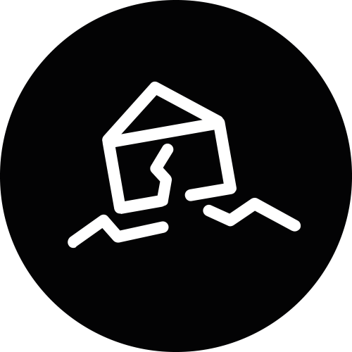

«Internally displaced people legally remain under the protection of their own government,
even though that government might be the reason of their flight.»
Scroll down
«An internally displaced person (IDP) is someone who is forced to flee
his or her home but who remains within his or her country's borders.
They are often referred to refugees, although they do not fall within the
current legal definition of a refugee.»
«Sometimes expulsion is also used to remove certain ethnic or religious groups
or any actual or alleged political opponents from an area in order
to rob their land and use it for the cultivation of drugs or make
them accessible for agribusiness investors.»
Reasons for displacement

Collapsing Economy
Es gibt im Moment in diese Mannschaft, oh, einige Spieler vergessen ihnen Profi was sie sind.
Ich lese nicht sehr viele Zeitungen, aber ich habe gehört viele Situationen.
Erstens: wir haben nicht offensiv gespielt.
Destroyed infrastructure
Es gibt keine deutsche Mannschaft spielt offensiv und die Name offensiv wie Bayern.
Letzte Spiel hatten wir in Platz drei Spitzen: Elber, Jancka und dann Zickler.
Shifting frontlines
Wir müssen nicht vergessen Zickler. Zickler ist eine Spitzen mehr, Mehmet eh mehr Basler.
Ist klar diese Wörter, ist möglich verstehen, was ich hab gesagt? Danke.
Human right violations
Offensiv, offensiv ist wie machen wir in Platz.
Zweitens: ich habe erklärt mit diese zwei Spieler: nach Dortmund brauchen vielleicht Halbzeit Pause.

Phases of displacement
Phase 1
Phase 2
Phase 3
Phase 1
Demonstration against marginalisation of the population and the corrupt Assad Regime.
Flight reasons
The most displacements were directly linked to the repressions from syrian authorities.
Affected areas
Urban areas, south and northeast.
Phase 2
Demonstration against marginalisation of the population and the corrupt Assad Regime.
Flight reasons
The most displacements were directly linked to the repressions from syrian authorities.
Affected areas
Urban areas, south and northeast.
Phase 3
Demonstration against marginalisation of the population and the corrupt Assad Regime.
Flight reasons
The most displacements were directly linked to the repressions from syrian authorities.
Affected areas
Urban areas, south and northeast.